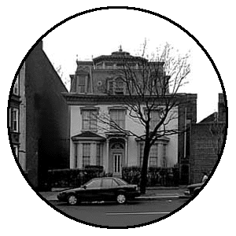
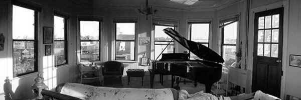
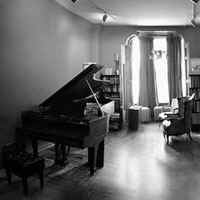

|
Just walk down Ninth
Street between Fourth and Fifth avenues,
past the post office, and the next thing you see is a beautiful garden
fronting a French Second Empire building which
arouses feelings of history and music |
|
|  |
History,
because it was built in 1852, before the brownstones, before Prospect Park, before the
Brooklyn Bridge. Music because its owners, Vita and Charles Sibirsky who moved there in
1981, started a music school called Slope Music. |
|
| Charles Sibirsky studied composition
and theory at Brooklyn College, and studied the art of Jazz Improvisation with the great
teacher and pianist Sal Mosca. He has been teaching since he was 17. Vita has been a student of piano for most of her life. and lately she is
studying the harpsichord, as well. She has been accepting students since 1989.
Charles teaches jazz improvisation on most instruments and
accepts vocal students as well. Vita teaches piano. The students range from four-year-olds
to senior citizens. |
|
|  |
| The studio at Slope
Music features Steinway Grand pianos. The 9-ft piano is the same model that graces the
stage at Carnegie Hall. All the keyboard students have the opportunity to play these fine
instruments. Voice students have the thrill of being accompanied by the finest pianos in
the world. Vita’s studio is the Cupola at the top of
the building. When the afternoon light filters through the 13 windows, one feels like they
are momentarily suspended above the buildings. Vita tries to create a warm. welcoming
space for the students. The unusual setting encourages people to relax and be open to
learning . The unique space makes every lesson special. |
Above is the
Cupola music studio. Click on the images to see
them in color
Below is the studio with the Concert Steinway Grand |
|  |
|
|
"People need more good
music in their lives. They need to make it and to learn to listen. This improves them in
every way, physically, emotionally and spiritually. Music relives the stress people feel
in these times," Charles says. |
|
| If you walk down Ninth street on a cool fall
evening, you’ll see Montauk Daisies in lush bloom in front of 271 Ninth street. You
might even hear jazz or chamber music drifting through an open window. Call 718-768-3804 for the information or to set up an appointment. There
are no semesters. Free interviews are offered and students can start at anytime. |
|
| HOME |